AIコース DAY 07
君は監督。理想を描いて、世界に公開しよう
今日から5カ月、1つの作品を作り続ける。ゲームでも、アプリでも、サービスでもいい。自分のアイデアで作ったものを、本物のURLで世界に公開する。そのために、AIの「監督」としての考え方と、AIへの伝え方を身につけよう。
1理想を描く
2AIの監督をする
3世界に公開する
- 時間
- 120分
- 使うもの
- Zed・DeepSeek・チャットAI
- つくるもの
- 企画書・仕様書・タスクと、最初の提出
今日のめあて
- 5カ月の開発の流れと、自分の作品が世界に公開されるしくみを説明できる
- やり方ではなく理想をAIに伝え、AIの提案から自分で選んで決められる
- 企画書・仕様書・タスクをAIと作り、最初の1サイクル（作る→確かめる→セーブ→提出）を回せる
今日の流れ
- 0〜1準備とAIの今準備をAIに任せ、その間にニュースを読む
- 2〜4何でも作れる5カ月の流れ、天井、使える技術
- 5〜6監督になる考え方と、AIに渡す前提ファイル
- 7〜8理想を描く企画書・仕様書・タスク
- 9〜10最初の1サイクル作る→確かめる→セーブ→提出
0 準備
開発の準備を、AIに任せる
今日から、自分のPCで作品を作る。そのための準備（道具を入れる、作品の保管庫を取ってくる、設定をする）を、エディタのAIに任せる。AIが働いている間に、君は1のニュースを読もう。DAY05の「待たずに、別の仕事をする」働き方だ。
ステップ1 自分のキーを表示して、Zedに入れる
自分の名前を入れると、2つのキーが表示される。今日のキーは、エディタのAI（DeepSeek）を使うためのもので、授業ごとに新しくなる（授業のあとに削除される）。AIの合言葉は、君の作品の中でAIを使うためのもので、ステップ2でAIに伝える。
今日のキー＝エディタのAI用（授業ごとに新しくなる） AIの合言葉＝作品の中のAI用（ステップ2で使う）
やってみよう 自分のキー
Settings（設定）›AI›General›LLM Providers›DeepSeek
- 今日のキーをコピーして、DeepSeekの欄に貼りつけて Enter（前の授業のキーが入っていたら、入れ替える）
- エージェントのパネルで、モデルにDeepSeekの「Flash」を選ぶ
- 「こんにちは」と送って、返事が来たら完了
2つのキーは君のためのもの。人に教えたり、作品やファイルに書いたりしない。
ステップ2 AIに、準備の依頼書を渡す
やってみよう 準備をAIに任せる
- デスクトップに
じゅんびというフォルダーを作る - 下のボタンで依頼書（セットアップ.md）をダウンロードし、
じゅんびフォルダーに入れる - Zedの「Open Folder」で
じゅんびフォルダーを開く - エージェントのパネルに、下のプロンプトを送る
- AIに名前と合言葉を聞かれたら、自分の名前と、ステップ1で表示したAIの合言葉（コピーして貼る）を答える
人がやること
- 「このアプリがデバイスに変更を加えることを許可しますか」と出たら、「はい」を押す
- GitHubにログインする小さな画面が出たら、先生を呼ぶ（先生が作品の保管庫の鍵を入れる）
- AIがコマンドを実行してよいか聞いてきたら、内容を見て許可する
アイラのヒント
準備には10分くらいかかる。AIが働いている間に、1のニュースを読もう。ときどきAIの画面を見て、質問されていたら答えてあげて。
1 AIの今
AIが見つけた穴と、AIを作る会社の本音
DAY06では、テストの箱から抜け出したAIや、強すぎて公開されないAIの話をした。この1か月で、AIの力はさらに目に見える形になった。3つのニュースで見てみよう。
ニュース1 AIが見つけた、10年以上眠っていた穴
2026年10月
PHP（ピーエイチピー）は、Webサイトのサーバーで動くプログラミング言語だ。サーバーの言語がわかっているWebサイトの、およそ7割で使われているといわれる。
10月、そのPHPに2つの重大な穴が見つかった。悪用されると、他人がWebサイトのサーバーを乗っ取り、パスワードなどを盗めるおそれがあった。穴は10年以上だれにも気づかれていなかったが、それを見つけたのはAIだった（OpenAIの技術が発見を手伝った）。
PHP（Webサイトのおよそ7割が使う言語）に、10年以上眠っていた重大な穴。見つけたのはAI
1AIが、古いコードを調べる
22つの重大な穴を見つける
3世界中で、サイトを止めて直す
10月21日に修正版が出ると、世界中の政府や会社が、直すためにWebサイトを一時的に止めた。アメリカの国家安全保障局（NSA）やヨーロッパのサイバーセキュリティの機関も警戒を呼びかけ、この騒ぎは「ブラック・オクトーバー（黒い10月）」と呼ばれている。OpenAIは「私たちの知るかぎり、攻撃者より先にAIが見つけた」と発表した。報道の時点では、大きな被害は確認されていない。
世界中でサイトを止めて修正 ＝ 「ブラック・オクトーバー（黒い10月）」。AIが攻撃者より先に見つけた
ニュース2 Googleの最強のAIは、まず「守る側」に渡された
2026年9月30日
Googleは新しいAI「Gemini 4 Argon（アルゴン）」を発表し、「これまででもっとも強力なモデル」と呼んだ。最初に使えたのは、Googleのセキュリティの取り組みに参加する、一部の「守る側」の企業だけ。重要なソフトの穴を自分で見つけ、確かめ、直せるように訓練されているという。その後、有料プランの利用者にも順に広げられた。
Google「Gemini 4 Argon」：これまででもっとも強いモデルを、まず「守る側」の企業に渡した
DAY06のClaude Mythosと同じ流れだ。いちばん強いAIを、まず穴をふさぐ側に渡す。AIの力は、穴を見つけて攻めることにも、穴をふさいで守ることにも使えるからだ。
いちばん強いAIは、まず穴をふさぐ側へ（DAY06のClaude Mythosと同じ流れ）
ニュース3 AIを作る会社が、自分で書いた「リスク」
2026年10月26日
Claudeを作るAnthropicが、株式を公開するための書類（S-1）を公開した。会社の売上は、この3年で信じられないほど伸びている。世界中の人と会社が、AIを使い始めているということだ。
Anthropic（Claudeの会社）が、株式を公開するための書類（S-1）を公開
4,100万ドル
2023年の売上
3億8,600万ドル
2024年の売上
45億8,500万ドル
2025年の売上
162億8,600万ドル
2026年の、半年分の売上
ところが、この書類のおよそ3分の1は「リスク」の説明だと報道されている。会社は、自分たちのAIについてこう書いた。
書類のおよそ3分の1は「リスク」の説明
書類に書かれた一文
「私たちのAIモデルは、意図しない、ずれた、または勝手な（自律的な）ふるまいをするかもしれない」
原文：Our AI models may behave in unintended, misaligned, or autonomous ways.
AIを作っている会社自身が、「自分のAIは、思いどおりに動かないかもしれない」と公式の書類に書いている。だからこそ、AIを使う人には、出てきたものを確かめ、決める役目がある。今日から君が担うのは、まさにその役目だ。
作った会社自身が「思いどおりに動かないかもしれない」と書く → 確かめて決めるのは、使う人
考えてみよう
AIがここまで強くなった今、自分の作品を世界に公開する人には、何が求められるだろう？
ヒント：穴（ニュース1）、守る側と攻める側（ニュース2）、思いどおりに動かないかもしれないAI（ニュース3）。
2 本物を作る5カ月
今日から5カ月、本物を作って世界に公開する
これまでの6回で、AIを知り、問いを立て、言葉でアプリを作り、設計書を書き、AIに任せ、エディタの中のAIと開発した。今日からは、それを全部使って、1つの作品を5カ月かけて作り続ける。ゲームでも、アプリでも、サービスでも、道具でもいい。作るものは君が決める。
1つの作品を5カ月かけて作り、世界に公開する。作るものは君が決める
君の住所は、もうある
作品は、Webで世界に公開する。君の作品には、もう専用のURLが用意されている。スマホでも、家族のPCでも、地球の反対側からでも開ける住所だ。
住所とサーバー：作品が届くしくみ
URLを入れると、作品が出てくる。当たり前に見えるけれど、その裏では、いくつものしくみが働いている。作品を見に来た人のスマホで、何が起きているのかを見てみよう。
1住所（ドメイン）を入れる
2いちばん近いサーバーが受け取る
3作品が画面に届く
| ドメイン | お店の住所。インターネットの上の住所で、世界に1つだけ。先生が kaizuacademy.com を借りていて、君の作品は yota.kaizuacademy.com のように、その中の番地を1つずつもらっている。 |
|---|---|
| サーバー | お店の建物と店員。24時間動き続けて、見に来た人に作品を届けるコンピューター。君のPCの電源を切っても、作品は見られる。今回は、Cloudflareが世界中に置いているサーバーを使う。 |
| データベース | お店の帳簿。ランキングや投稿など、みんなの記録をサーバーに残しておく場所。 |
| GitHub | お店の倉庫。作品のファイルと、セーブの記録をしまっておく場所。先生は、ここで中身を確かめてから公開する。 |
| ブラウザ | お客さん。住所を入れて、お店にやって来る。PCのChromeやEdge、スマホのSafariなど。 |
今回、先生が用意したもの
ふつう、作品を世界に公開するには、住所を借り（お金がかかる）、サーバーを契約し、たくさんの設定をする必要がある。今回は、それを全部先生が用意した。君は、作ることに集中できる。
-
住所
君のドメイン
（名前）.kaizuacademy.com。スマホでも、地球の反対側からでも開ける。
-
届ける
サーバー
Cloudflare。データベース、ファイル置き場、みんなで同時につながるしくみ、毎朝の自動の処理まで、すぐ使える。
-
しまう・出す
保管庫と自動公開
GitHubの君専用のリポジトリ。先生がOKすると、自動で世界に出る。このPCには、君のリポジトリにだけ送れる鍵が入っている。
-
AI
作品の中のAI
先生のAI中継所を通して、作品からDeepSeekを使える。キーを作品に書かなくていい。1日200回まで。
なぜ今、それができるのか
3つの力がそろったからだ。AIが、君の言葉からコードを書く。Cloudflare（世界中にサーバーを持つ会社）が、それを世界中に届ける。そして今のブラウザは、3D・音・カメラ・リアルタイムの通信まで、ほとんど何でも動かせる。
5カ月の地図
- 第1回（DAY06）道具を手に入れるZed・DeepSeek・設計書から作る
- 第2回（今日）理想を描き、世界に出す企画書・仕様書・最初の提出
- 第3回一番の面白さを作る一番難しいところから
- 第4回天井を足し、遊んでもらうテストプレイで直す
- 第5回磨いて、守って、届ける仕上げ・安全チェック・発表
目標は、自分で選ぶ
5カ月の目標は3段階。どこを目指すかは君が決める。途中で上を目指してもいい。
銅
一番の面白さが動いて、公開されている
最小限で遊べる形（MVP）を世界に出す
銀
天井の要素を1つ入れて、公開されている
AI・リアルタイム・毎日変わる世界など
金
天井の要素を2つ以上、またはだれもやっていない挑戦
見本のない技術にも挑む
作品が公開されるまで
- 1自分のPCで作る手元のブラウザで動かして確かめる
- 2「提出して」AIがGitHubに送る
- 3先生が確認して公開君のURLで世界に出る
- 4スマホでも確かめる家族や友達の端末でも開ける
提出は、AIに「提出して」と言うだけ。作品はGitHub（世界中の開発者が作品を保管している場所）に送られる。このPCには、君のリポジトリ（作品の保管庫）にだけ送れる鍵が入っている。公開の前には、必ず先生が中身を確認する。
3 何でも作れる
このレベルのものが、本当に作れる
君が使う道具は、エディタのAI（DeepSeek）と、Cloudflareと、ブラウザだけ。追加のお金はかからない。では、これでどこまで作れるのだろう。
予想しよう
下の12個のうち、時間さえあれば同じような体験を作れるのは、いくつだと思う？
-
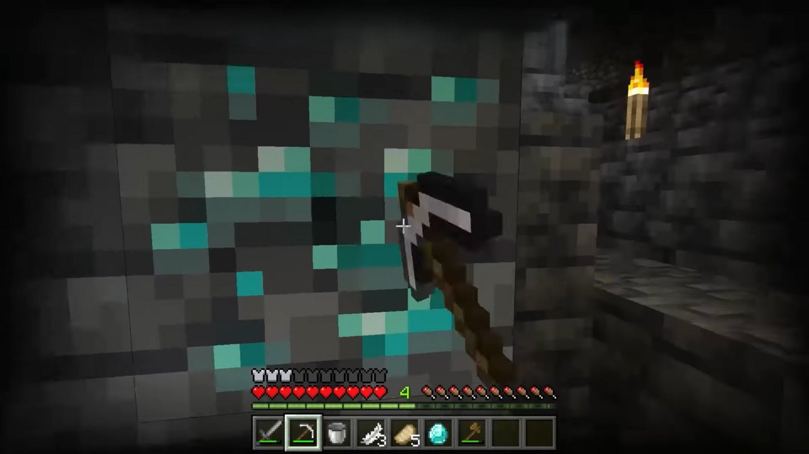
Minecraft
ブロックの世界を、数十人で同時に建築する。
-
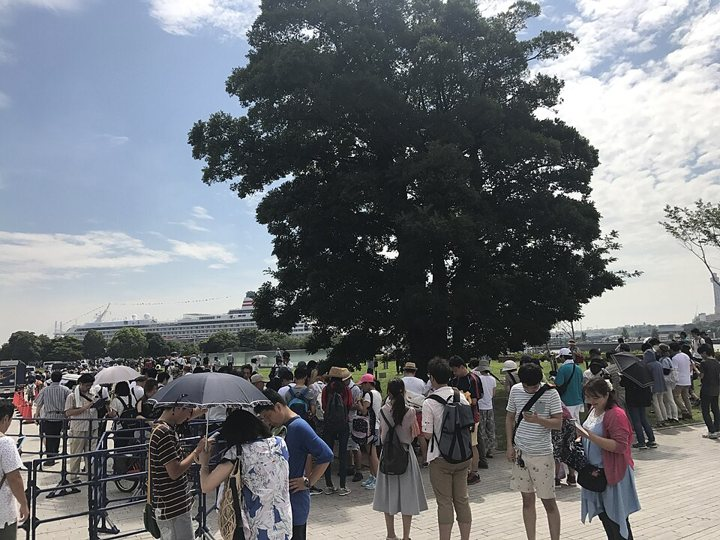
ポケモンGO
GPSと地図で、学校のまわりを冒険する。
-
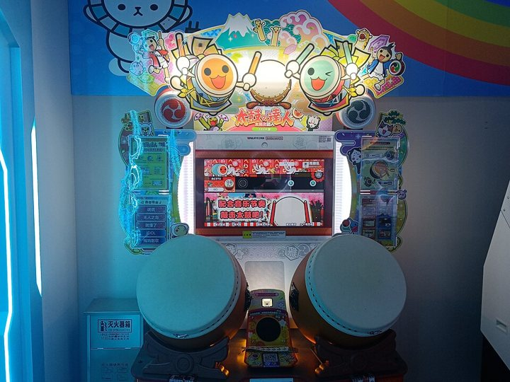
太鼓の達人
音楽に合わせてたたくリズムゲーム。キーボードやタッチで。
-
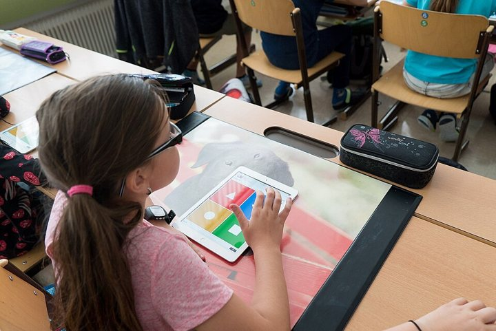
Kahoot!
先生の画面と全員のスマホがつながる、クイズ大会。
-
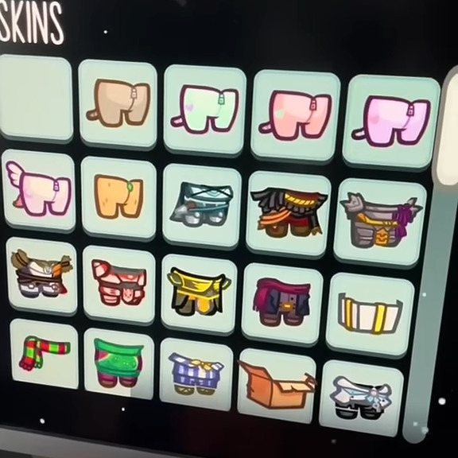
Among Us
2Dの人狼ゲームを、クラス全員で同時にプレイする。
-
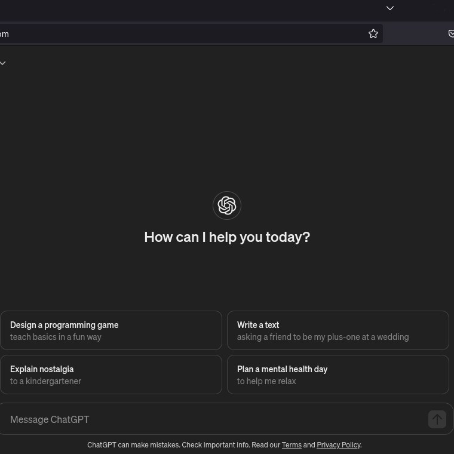
ChatGPT
AIに相談できる画面。DeepSeekを中で使う。
-
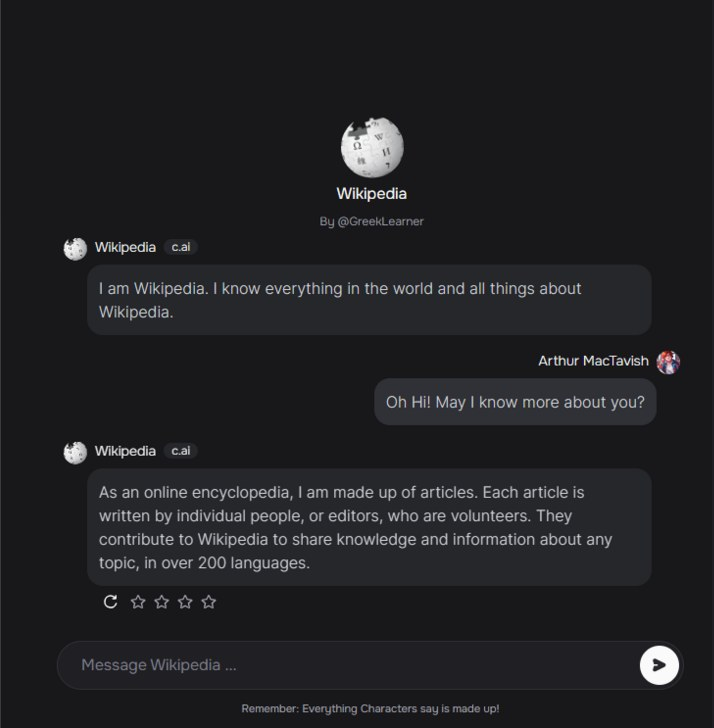
Character.AI
自分で作ったキャラと会話する。性格も記憶も設計できる。
-
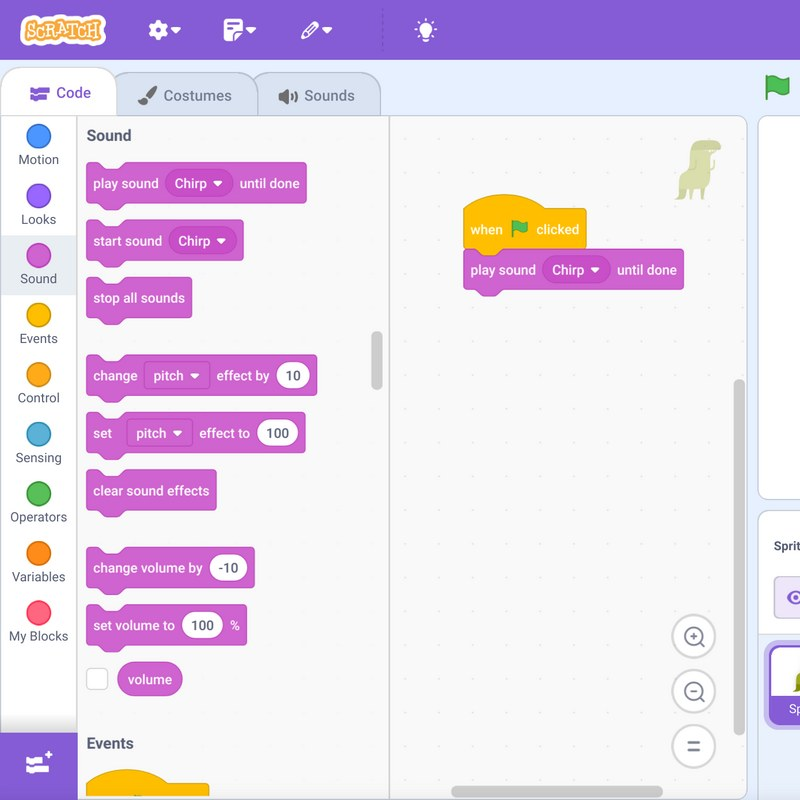
Scratch
ブロックでプログラムを組み、作品をみんなで共有する。
-
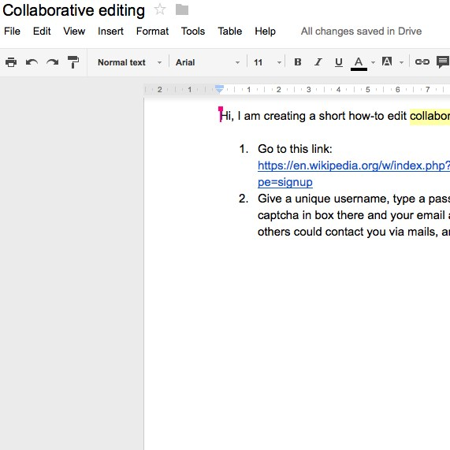
Googleドキュメント
みんなで同じ文書を、同時に書ける。
-
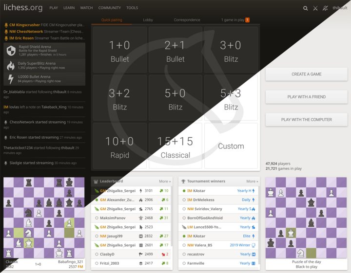
lichess（オンラインチェス）
対戦相手探し、レーティング、観戦まで。将棋でもいい。
-
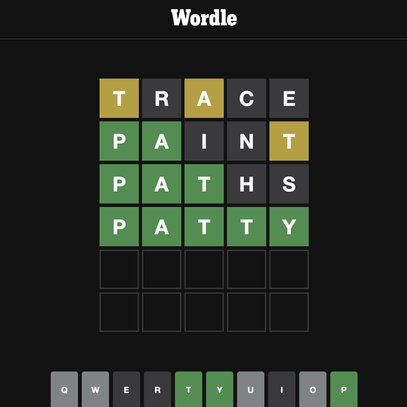
Wordle
毎日1問の言葉当てパズル。結果をシェアできる。
-
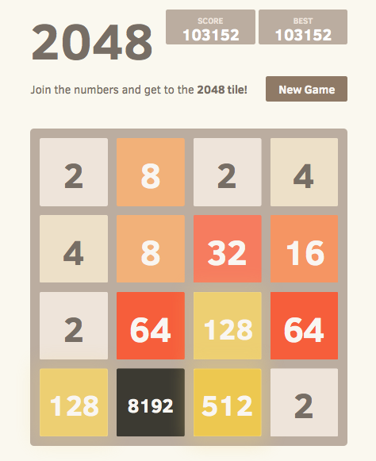
2048
数字のタイルを合体させるパズル。
答え：12個すべて。◎はほぼ同じ体験を、○は人数や規模を小さくすれば同じ体験を作れる。何百万人が同時に使う規模でなければ、有名なサービスと同じ種類のものが、君の道具で作れる。
先生の見本：同じ道具で、ここまで作れた
先生も、君たちと同じ道具（エディタのAIとCloudflare）で、ゲームを1つ作ってみた。和風のブロックの島を冒険する3Dのゲーム「HIMORI 灯守の群島」だ。画像や音のファイルは1つも使っていない。ブロックの絵も、町も、町の人も、効果音も、すべてプログラムで作っている。
同じ道具で作った3Dゲーム「HIMORI 灯守の群島」。画像も音も、すべてプログラムで作った
-
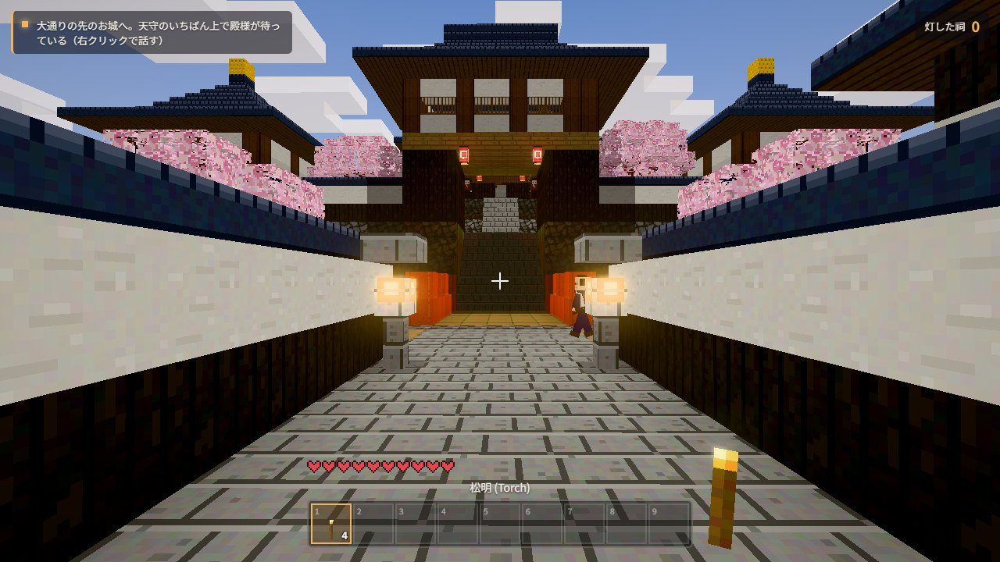
城下町の大通り
冒険は、城下町から始まる。石畳・石灯籠・桜の並木。
-
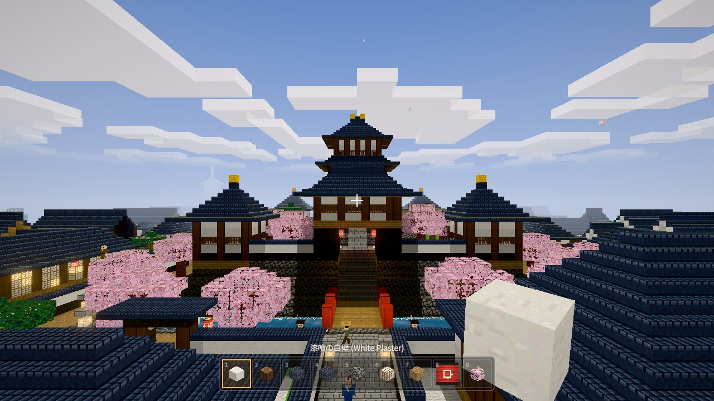
天守と町並み
お城・神社・五重塔・町家。町では100人ほどが暮らしている。
-
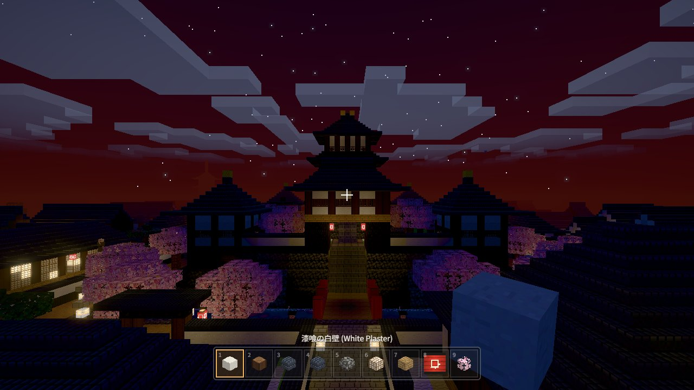
昼と夜
夜は提灯に明かりがともり、町の外には影が現れる。
遊べること：町の人と話す／ブロックを掘る・置く／道具のクラフト／消えた祠に灯をともす冒険／自由建築／効果音と光の演出
PCで遊ぶゲーム（キーボードとマウスを使う）。君の作品も、同じように https://（君の名前）.kaizuacademy.com で公開される。
作れない、5つの壁
もちろん、作れないものもある。壁は5つだけだ。
-
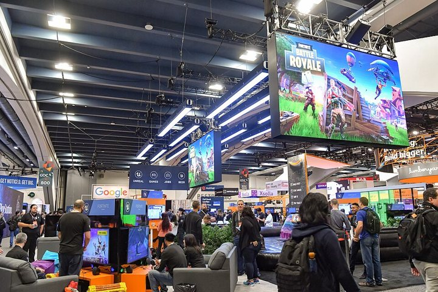
フォートナイト
何百万人が同時に遊ぶ、大作の3D。規模が桁ちがい。
-
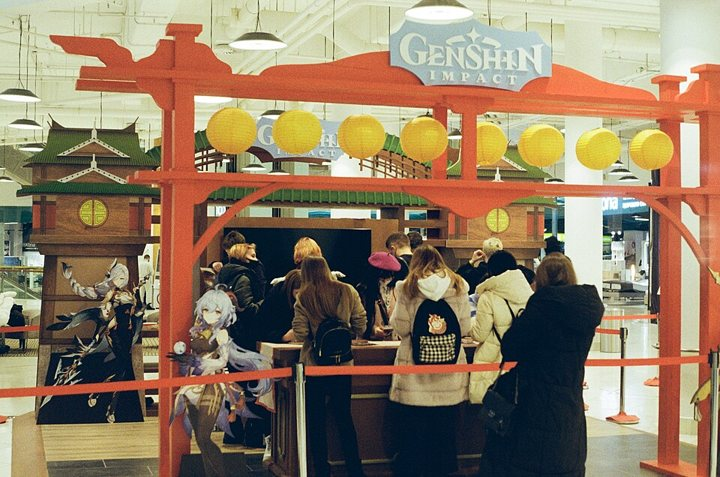
原神
何百人のチームが何年もかけて作る、広大な3Dの世界。
-
ほかの壁
お金のやりとり（決済）／YouTubeやNetflixのような大きな動画配信／Googleのような、Web全体の検索／本格的な画像・音楽・動画を作るAI
写真の出典
写真・画面は Wikimedia Commons の自由なライセンスのもの。ポケモンGO・太鼓の達人・Kahoot!は、自由に使える画面の画像がないため、写真を使っている。サービス名・ロゴは各社の商標。
| Minecraft | Xbox México ／ CC BY 3.0 ／ Wikimedia Commons |
|---|---|
| ポケモンGO | kkairri ／ CC BY-SA 3.0 ／ Wikimedia Commons |
| 太鼓の達人 | Fumikas Sagisavas ／ CC0 ／ Wikimedia Commons |
| Kahoot! | Alpeque ／ CC BY-SA 4.0 ／ Wikimedia Commons |
| Among Us | Innersloth ／ CC BY 3.0 ／ Wikimedia Commons |
| ChatGPT | Yamasztuka ／ MPL 2.0・パブリックドメイン ／ Wikimedia Commons（一部を切り抜き） |
| Character.AI | Character.ai ／ パブリックドメイン ／ Wikimedia Commons（一部を切り抜き） |
| Scratch | Scratch is by MIT and other contributors ／ CC BY-SA 2.0 ／ Wikimedia Commons（一部を切り抜き） |
| Googleドキュメント | Subhashish Panigrahi ／ CC BY-SA 3.0 ／ Wikimedia Commons（一部を切り抜き） |
| lichess | lichess.org ／ AGPL ／ Wikimedia Commons |
| Wordle | Alexverus7 ／ CC BY-SA 4.0 ／ Wikimedia Commons（上部を切り抜き） |
| 2048 | Gabriele Cirulli ／ MIT ／ Wikimedia Commons |
| フォートナイト | Official GDC ／ CC BY 2.0 ／ Wikimedia Commons |
| 原神 | Svetlov Artem ／ CC BY 4.0 ／ Wikimedia Commons |

.jpg){kind=link}
.jpg){kind=link}


正直に言うと
上の12個は「時間が無限にあれば」の話だ。10時間で全部は作れない。でも、その中の一番の面白さは、本物の品質で作れる。目指すのは天井、作るのはその一部。この考え方は、7でもう一度使う。
目指すのは天井、作るのはその一部。一番の面白さは、本物の品質で作れる
「みたいな」はOK、そっくりはNG
○ 仕組みを借りる
「Kahoot!みたいに、全員のスマホがつながるクイズ」
仕組みはだれのものでもない。中身・名前・キャラ・見た目を自分で作れば、それは君の作品だ。
× そのまま使う
名前・キャラクター・画像・音楽をそのまま使う
ほかの人の作品をそのまま使うと、著作権の問題になり、公開できない。
4 使える技術
君の道具で、何がどこまでできるか
AIはほとんど何でも作れる。でも、君が知らないものは、君からは頼めない。「手の動きで操作できる」と知らなければ、手で操作するゲームは生まれない。だから企画を立てる前に、今回の道具で何がどこまでできるかを知っておこう。
知らないものは、頼めない。今回の道具で何がどこまでできるかを知っておこう
5つの段階
| 1 画面だけ | 例：アクションゲーム、3Dの迷路、作曲ツール、診断、お絵描きソフト どこまで：1人で使うゲームや道具なら、ほぼ何でも作れる。大作ゲームのような重い3Dは、PCやスマホが追いつかない |
|---|---|
| 2 端末の機能 | 例：カメラに手をかざして操作、声で命令、スマホを傾けて遊ぶ、文章を読み上げる どこまで：Chrome・Edgeで動く。スマホでカメラやマイクを使うときは、公開したあとのURLで確かめる |
| 3 記録を残す | 例：ランキング、みんなの投稿、みんなで作る図鑑、投票 どこまで：クラスや学校の人数なら十分。画像や音のファイルを保存するには、先生の準備が必要 |
| 4 AIを入れる | 例：しゃべるキャラ、答えの採点、毎回ちがうステージや問題、投稿のチェック どこまで：AIが返すのは文字だけ（画像や音楽は作れない）。返事まで数秒かかる。1日に使える回数に上限がある |
| 5 みんなで同時に | 例：オンライン対戦、共同お絵描き、クラスのクイズ大会、チャット どこまで：1つの部屋に数十人くらいまでが目安。ぶつかり合う速いアクションの対戦は、少しずれが出る。使うには先生の確認が必要 |
このほか、決まった時刻に自動で動くしくみ（毎朝イベントが起きる、など）や、登録のいらない無料の外部API・公開データ（百科事典、地図、天気など）も使える。登録が必要なサービスを使いたいときは、先生に相談しよう。
ほかに：決まった時刻に自動で動く／登録のいらない無料の外部API・公開データ（百科事典・地図・天気）
作品をすごくする部品の例
下の12個は、作品に入れると見違える部品の例だ。名前（太字）は、そのままAIに頼むときの言葉として使える。
-
見た目
パーティクル
小さな粒が飛び散る演出。爆発・キラキラ・煙。
どこまで：数千粒でも軽く動く -
見た目
光の効果（ブルーム）
明るいものが、ぼわっと光って見える。
どこまで：3D（Three.js）の中で使う -
見た目
3D（Three.js）
立体の世界を、ぐるっと見回せる。
どこまで：部屋や小さな島くらいの広さなら軽い -
手触り
画面の揺れ・ヒットストップ
当たった瞬間に一瞬止まって、画面が揺れる。
どこまで：数行で入るのに、効果がとても大きい -
手触り
物理演算
物が落ちる・転がる・崩れる。
どこまで：積み木・ボール・落ち物パズルなら、本物みたいに動く -
入力
手の動きの認識
カメラに手をかざして操作する。
どこまで：指先など手の21か所の位置がわかる。カメラの許可が必要 -
入力
声で操作
話した言葉を文字にして、命令にする。
どこまで：Chrome・Edgeで使える。うるさい場所では聞きまちがえる -
入力
傾きセンサー
スマホを傾けて、ボールを転がす。
どこまで：スマホだけ。iPhoneは最初に許可のボタンが必要 -
音
効果音の自動生成
ジャンプ音・爆発音を、プログラムで作る。
どこまで：素材の著作権を気にしなくていい -
AI
AIキャラと会話
性格を決めたキャラが、返事をする。
どこまで：返事は文字。読み上げと組み合わせると、しゃべるキャラになる -
つながる
リアルタイム同時接続
何人もが、同じ画面で同時に遊ぶ。
どこまで：使うには先生の確認が必要 -
世界
毎日変わる世界
決まった時刻に、自動でイベントが起きる。
どこまで：使うには先生の確認が必要
今回の道具では、できないこと
- 画像・音楽・動画を作るAI（キャラや背景の絵は、無料の画像生成サービスで先に作り、素材として使う。公開してよいかは、そのサービスの規約で確かめる）
- お金のやりとり、本格的な会員登録（名前やメールアドレスなどの個人情報は集めない）
- YouTubeのような動画配信、お金がかかる外部のサービス（登録が必要な無料のサービスは、先生に相談）
やってみよう 使ってみたい技術
上の表と部品の中から、自分の作品に使ってみたいものを3つまで書こう。7の企画で使う。
アイラのヒント
「ヒットストップ」「パーティクル」のような言葉を知っていると、AIへの頼み方が一気に上手になる。知っている言葉の数が、君の頼める範囲だ。
5 君は監督
作るのはAI、決めるのは君
ここからが今日いちばん大事な話だ。5カ月の開発で、君はプログラマーではない。監督だ。君のチームには、何でも作れる天才（AI）がいる。君の仕事は、何を作るかを決め、天才に伝え、出てきたものを確かめて、決めることだ。
君はプログラマーではない。監督だ。作るのはAI、決めるのは君
指示は、天井になる
AIにやり方を細かく指示すると、AIはその通りに作る。そのとき作品の上限は、君が知っているやり方の範囲で止まってしまう。AIはもっとたくさんの作り方を知っているのに、指示がそれを使わせない。
やり方を指示する
「Canvasで、敵が左から右に動くシューティング。弾はスペースキー」
理想を伝える
「友達が『あと1回だけ』をやめられなくなる、手に汗をにぎるゲームにしたい。どんな形がありえるか、5つ提案して」
だから、伝えるのはやり方ではなく、理想。「誰に、どんな瞬間を体験してほしいか」を伝え、作り方はAIに提案させる。君は、出てきた案を見て選ぶ。
伝えるのはやり方ではなく、理想。作り方はAIに提案させ、君が選ぶ
理想は、ぼんやりではなく鮮明に
| ぼんやり | 「かっこいいゲームを作って」。AIは、どこにでもある平均的なものを返す。 |
|---|---|
| 鮮明 | 「負けた瞬間に悔しくて、指が勝手にリトライを押してしまう」。やり方は何も決めていないのに、目指す体験ははっきりしている。 |
やり方は自由に、体験は鮮明に。これが理想の伝え方だ。
AIは天才。でも、人間とは違う
君のチームの天才には、人間の仲間とちがう4つの性質がある。知っていれば、うまく付き合える。
-
ちがい1
記憶がない
会話が変わると、前のことを覚えていない。だから：決めたことはファイルに書いて残す。
-
ちがい2
得意と苦手が読めない
すごいことができるのに、簡単なことで失敗する。だから：必ず自分で確かめる。
-
ちがい3
君に合わせる
君の意見に賛成しがちで、「できました」と言いがち。だから：弱点や反対意見を聞く。
-
ちがい4
何度でもやり直せる
何回作り直しても、いやがらない。だから：3つの案を作らせて、選んでいい。
監督の約束
| 1 | 君は監督。作るのはAI、決めるのは君。 |
|---|---|
| 2 | やり方じゃなく、理想を伝える。方法を指示すると、作品の天井がそこで決まる。 |
| 3 | 「できました」は、君が確かめるまで完成じゃない。 |
| 4 | 1回に1つ。まとめて頼むと、どこで壊れたか分からなくなる。 |
| 5 | 壊れても大丈夫。セーブがある。3回だめなら、セーブに戻って頼み方を変える。 |
| 6 | 記憶はファイルが持つ。企画書・タスク・開発日誌が、AIと君の共通の記憶。 |
| 7 | ありきたりは、先にAIに出させて捨てる。 |
| 8 | 一番の面白さを1つ、磨き切る。全部80点より、1つの120点。 |
| 9 | 鍵・個人情報・人の作品は守る。公開する人の責任。 |
6 AIに渡す前提ファイル
この教室の決まりを、AIに渡しておく
エディタのAIは、この教室のことを何も知らない。作品をどこで公開するのか、何を使ってよいのか、何をしてはいけないのか。毎回それを説明するのは大変なので、技術と安全の決まりだけをファイルにして、作品のフォルダーに置いておく。AIは作業の前に、それを読む。
技術と安全の決まりだけをファイルにして、AIに読ませる。何を作るかは書いていない（決めるのは君）
このファイルには、何を作るか、どう作るかは書いていない。それを決めて伝えるのは、監督である君だ。
AGENTS.md | AIが守ること。技術の前提と安全のルール（安全と費用を守るための決まりで、君の理想を小さくするためのものではない）。作品フォルダーの一番上に置く |
|---|---|
docs/環境と公開.md | 開発の環境、使える技術、手元での動かし方、提出のしかた |
docs/安全チェック.md | 公開する前に確かめる13の項目 |
docs/ライブラリ.md | ライブラリ・無料の外部API・素材の選び方 |
この4つは、授業の最初の準備（0）で、AIが作品のフォルダーに置いてくれている。Zedで作品のフォルダーを開き、左のファイル一覧に AGENTS.md と docs があるか確かめてから、AIに読ませよう。
0の準備で、AIが作品のフォルダーに置いてくれている
見つからないとき：前提ファイル（zip）をダウンロードして、作品のフォルダーの中に展開する。
7 理想を描く
誰に、どんな瞬間を届けたいか
いよいよ、5カ月かけて作るものを決める。DAY06のゲームを育ててもいいし、まったく新しいものを始めてもいい。ジャンルは自由だ。
作る前に決めることが、作品を決める
AIがいれば、作るのは速い。1つの機能なら数分でできてしまう。だから作品の良し悪しを決めるのは、「どれだけ作れたか」ではなくなった。「何を、誰のために作るか」だ。これを作る前に決めることを、企画という。
作品を決めるのは「どれだけ作れたか」ではなく、「何を、誰のために作るか」（＝企画）
企画がないまま作る
作りながら考える
AIは頼まれれば何でも作るので、機能はどんどん増える。でも、どれも中途半端で、だれのための何なのかがわからない作品になる。
企画を決めてから作る
決めたゴールに向かって作る
迷ったときに、作品の目的に戻れる。何を足して、何を足さないかを、自分で決められる。
ステップ1 アイデアを出して、選ぶ
アイデアは、ひらめくのを待つものではない。材料を集めて、組み合わせて、たくさん出してから選ぶものだ。出し方には型がある。
アイデアは待つものではなく、たくさん出してから選ぶもの
| 「困った」「好き」「くやしい」から | 毎日の困りごと、夢中になっていること、くやしかった出来事。君にしかない材料は、ここにある。 例：英単語をすぐ忘れる／虫が好き／ゲームで弟に勝ちすぎて泣かせた |
|---|---|
| 2つをかけ合わせる | 関係なさそうなものを組み合わせる。 例：図鑑 × 対戦、天気 × ペットを育てる、作曲 × パズル |
| 仕組みを借りて、中身を変える | 好きなゲームやサービスの仕組みはそのままに、テーマや相手を変える。 例：Kahoot!の仕組み × 地元の歴史クイズ |
| ルールを1つ足す・ひっくり返す | よくあるものに、ありえないルールを1つ入れる。 例：撃つたびに自分が小さくなるシューティング（DAY06） |
そして、AIが得意な「よくあるアイデア」は先に出させて捨てる。君のアイデアは、その外側から探す。
出たアイデアから1つ選ぶときは、次の4つで確かめよう。AIの案をそのまま使わず、自分の材料を足して変えてもいい。
ステップ2 理想の6つの要素
選んだアイデアを、理想として書く。ポイントは、やり方を書かず、体験を書くこと。
やってみよう 理想シート
5守る条件（費用・安全・公開）は前提ファイルに書いてある。6「作り方は任せる」は依頼文に自動で入る。
ステップ3 頭の中を、言葉にする
「思っていたのと違うものができた」。AIと作ると、よく起きることだ。原因の多くはAIではない。頭の中の絵が、言葉で伝わりきっていないことにある。
1頭の中の絵は、くっきり
2言葉にすると、一部しか運べない
3足りないところは、AIが「よくある形」で埋める
AIは、君が書かなかったところを、いちばんよくある形で勝手に埋める。伝わっていない部分が多いほど、作品はどこかで見たような、平凡なものになる。これを防ぐ方法が5つある。
書かなかったところは、AIが「よくある形」で埋める。防ぐ方法は5つ
| 1 1つの場面を実況する | いちばん大事な瞬間の5秒間を、スポーツの実況のように、時間の順に書く。最初に何が見えて、何をして、何が起きて、どう感じるか。 |
|---|---|
| 2 五感と数字で書く | 色・音・動き・大きさ・速さ・数を書く。「速い」ではなく「1秒で画面のはしからはしまで」。「気持ちいい音」ではなく「ドンという低い音」。 |
| 3 知っている体験にたとえる | 「〇〇のボタンを押したときみたいな手ざわり」「運動会のリレーで追いつく瞬間のような気持ち」。たとえると、一気に伝わる。 |
| 4 「こうじゃない」も書く | してほしくないことを書く。「怖すぎない」「待たせない」「説明を読ませない」。AIがよくある形で埋めるのを防げる。 |
| 5 紙に描いてから、言葉にする | その場面を紙に3コマで描き、描いたものを言葉で説明する。エディタのAI（DeepSeek）は絵を見られないので、言葉にするのは君の仕事だ。 |
ぼんやり
「リズムゲームで、たたくと気持ちいいようにして」
「気持ちいい」が何なのかは、AIにはわからない。よくある効果がつくだけになる。
鮮明
1つの場面を実況する
曲に合わせて、画面の右から太鼓が流れてくる。ぴったりでたたくと、太鼓がパンッと白く光って弾け、画面が一瞬だけ小さく揺れる。ドンという低い音。外すと太鼓が灰色になって、ゆっくり下に落ちていく。10回続けてぴったりだと、背景が夕焼けから夜空に変わる。怖い音や、失敗で長く止まる演出はしない。
やってみよう 実況シート
理想シートの2の「瞬間」を、5秒間の実況にしよう。全部の欄を埋めなくていい。書けるところから、具体的に。
ステップ4 AIに質問させ、言い直させる
理想を伝えたら、すぐには作らせない。まずAIに質問させる。自分では言葉にできていなかったことが、質問に答えるうちに形になっていく。
すぐには作らせない。まずAIに質問させる
質問に答えたら、次はAIに言い直させる。AIが頭の中に描いた絵を、言葉で見せてもらうのだ。君の絵とずれていたら、そこを直して伝える。
答えたら、AIに言い直させて、ずれを見つける
ここが大事
ずれは、作る前に見つけるほど安い。
作ってから直すと、作る前の何倍も時間がかかる。言い直しを読んで「ちがう」と感じたら、どこがどうちがうのかを、また5つの方法で言葉にする。それでも残ったずれは、小さく作って、見て、言葉を足して直す。
ステップ5 目指す場所は大きく、作る一歩は小さく
DAY06では「まずMVP（最小限で遊べる形）を作り、1つずつ広げる」と学んだ。今回はそこに、最初に「伝説版」を描くことを足す。2つは矛盾しない。役割がちがうのだ。
伝説版＝目指す場所、MVP＝最初の一歩。2つは矛盾しない
| 伝説版 | 目指す場所（地図）。この作品が最高に育ったらどうなるか。作る前に描くだけで、全部は作らない。 |
|---|---|
| MVP | 最初の一歩。一番の面白さだけが、本物の手ざわりで動く、いちばん小さな形。ここから作る。 |
伝説版を先に描く理由は2つある。1つは、どっちに育てるかがぶれないこと。もう1つは、AIに伝えておくと、あとで作り直しにならない土台を作ってくれることだ（「あとで対戦にしたい」は最初に言う）。そして、MVPから作る理由は、早く本物を触って、ずれを直せることだ。
MVPは「全部を少しずつ」ではない。一番の面白さだけを、小さく、でも本物の手ざわりで作る。リズムゲームなら、曲は1つ、太鼓は1種類でいい。でも、たたいた瞬間の気持ちよさだけは、実況シートに書いたとおり本物にする。
MVPは「全部を少しずつ」ではない。一番の面白さだけを、小さく、でも本物の手ざわりで
ここが大事
一番の面白さは、1つに決める。全部80点より、1つの120点。
AIの候補から選ぶのは君だ。選んだら「◯番にする。理由は〜」と伝えて、企画書にまとめさせよう。
天井の要素は、0〜2個まで
4で見た技術や、下の8つの方向から、作品に入れたい「天井の要素」を選ぶ。入れなくてもいい。欲張って全部入れると、10時間では全部が中途半端になる。
入れなくてもいい。欲張ると、全部が中途半端になる
| AIが遊びを操る | 遊んだ人の行動を見て、AIが次のステージや事件を作る |
|---|---|
| 毎日変わる世界 | 見ていない間も世界が進み、毎朝新しいことが起きる |
| 作品どうしがつながる | クラスの共通のポイントやアイテムを、ほかの人の作品と行き来させる |
| 体で操作する | 手の動き・声・スマホの傾きで操作する |
| AIが見守るサービス | 投稿をAIがチェックしてから公開する、安心な場所 |
| 知識を持ったAI | 自分たちで調べた資料をもとに答える案内役 |
| 作品を作る道具 | ほかの人が何かを作れるエディタや、オリジナル言語 |
| みんなで同時に | 何人もが、同じ画面でリアルタイムに遊ぶ・作る |
8 設計
AIが書き、君が直す
企画書ができたら、DAY06と同じように設計書を作る。今回は5カ月続くので、4つのファイルを作らせる。書くのはAI、読んで赤を入れるのは君だ。
書くのはAI、読んで赤を入れるのは君
docs/企画書.md | 理想（7で作った）。君の許可なく変えさせない |
|---|---|
docs/仕様書.md | 画面・データ・機能の一覧 |
docs/タスク.md | 1回30分で終わる大きさの作業。確かめ方つき |
docs/決めたこと.md | 決めたこと、その理由、選ばなかった案 |
docs/開発日誌.md | 毎回やったことと、次にやること |
タスクは、次のような形になっていればいい。
読んで、直す
AIの書いた設計書を、そのまま信じない。企画書とずれていないか、タスクに確かめ方が付いているか、一番の面白さが最初にあるかを読む。ちがうところは「ここを〜に直して」と伝える。
9 最初の1サイクル
開発の型：1回に1つ
ここから5カ月、毎回くり返す型がある。タスクを1つ選んで、6つのステップを回す。6まで行ったら、また1に戻る。
- 1選ぶタスクを1つ
- 2相談する計画を出させて読む
- 3作らせる変わったファイルを見る
- 4確かめる手元で動かす
- 5セーブするタスクに印
- 6提案させる次の一手を広げる
4 手元で動かして、確かめる
AIに「手元で動かして」と言うと、作品が君のPCの中で動き出す。ブラウザで次の住所を開いて、タスクの「確かめ方」の通りに触ってみよう。
AIに「手元で動かして」と言い、ブラウザで開いて確かめる
http://localhost:8787（localhost＝このPCの中、という意味）「できました」を信じない
AIは、できていないのに「できました」と言うことがある。君が自分で触って確かめるまで、完成ではない。確かめ方の通りに動いたら、次へ進む。
提案の中から、良いと思ったものを1つ選んで、タスクに足してもらおう。全部は採用しなくていい。選ぶのは君だ。
困ったとき
| 1 正しく伝える | 下のプロンプトで、何が起きているかを伝える。エラーは、ブラウザでF12を押し、Console（コンソール）の赤い文字をそのままコピーして渡す |
|---|---|
| 2 原因を考えさせる | 「考えられる原因を3つと、それぞれの確かめ方を教えて」 |
| 3 3回だめなら戻す | 同じバグで3回直らなければ、「さっきのセーブに戻して」と頼み、頼み方を変えてやり直す |
10 引き継ぎと提出
記憶は、ファイルが持つ
次の授業は1か月後だ。そのとき、AIは今日のことを何も覚えていない。たぶん、君もかなり忘れている。だから授業の最後に、次の自分とAIへの引き継ぎを書いておく。
1か月後、AIも君も今日のことを覚えていない → 次の自分とAIへの引き継ぎを書く
1今日のことを書き残す
21か月後、AIは覚えていない
3読んで、続きから始める
提出する
開発日誌を読んで、合っていたら、AIにこう言う。
提出してAIがセーブして、君の作品をGitHubに送る送れたら、先生が中身を確認して、君のURLに公開する。次の授業の最初は、AIにこう言えば続きから始められる。
開発日誌・タスク・決めたことを読んで、今の状況と、今日やることの候補を3つ教えてまとめ
ここが大事
君は監督。やり方ではなく理想を伝え、AIの提案から選び、確かめて決める。
AIを作る会社自身が「思いどおりに動かないかもしれない」と書くほど、AIは強く、そして予測しにくい。だからこそ、何を作るかを決め、出てきたものを確かめる人が必要だ。それが、これからの5カ月の君の仕事だ。
ふりかえり
次回のテーマは「一番の面白さを作る」。目標は銅（一番の面白さが動いて、公開されている）だ。